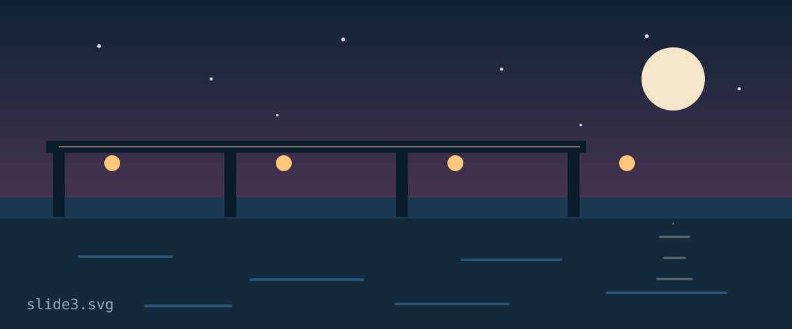

A carousel
A slideshow. Still no JavaScript of our own.

Haddock & Chips
$16.99, every day.

Hand-Cut Fries
Cut every morning.

The Back Deck
Open all summer.
What the pieces do
carousel-innerholds the slides.carousel-itemis one slide.- Exactly one slide needs
active. Two, or none, and it breaks. data-bs-slide="next"on the arrows,data-bs-slide-to="0"on the dots.data-bs-interval="4000"is how long a slide stays, in milliseconds. 4000 is four seconds.- Every
data-bs-targethere points back atid="specials".
Try this: make
data-bs-interval 1000 on all three slides and reload.
Now ask yourself whether anyone could read the captions. That is the reason most real sites
do not auto-play a carousel: delete data-bs-ride="carousel" and let people
click instead.
Our slides are three SVG files in images/. Swap in your own photos: keep them all
the same size, or the page jumps as the slides change. d-block w-100 makes each
image fill the width of the carousel.